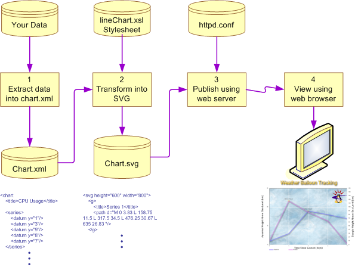

|
|
How to Create Line Charts from XML DataThis shows you how to create a Scalable Vector Graphics (SVG) line chart from an XML input file so that a user can view it in a web browser. You can optionally convert the SVG file to an image file. The ProblemYou have data that you need to publish as a line chart and be viewable by users using their web browser. A typical example is having to publish daily CPU usage figures in graphical form on your intranet. A SolutionThis solution involves the following steps:
 More Information
|
|
Copyright © 2004-2005 Andrew J. Armstrong |